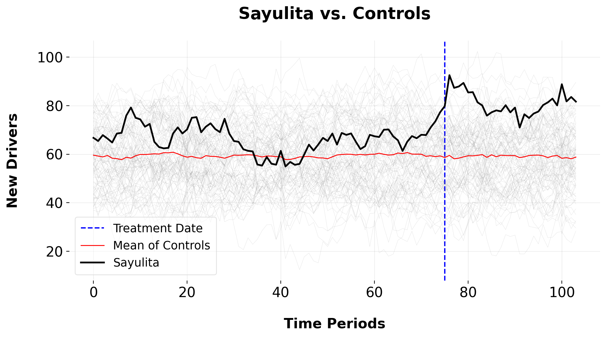
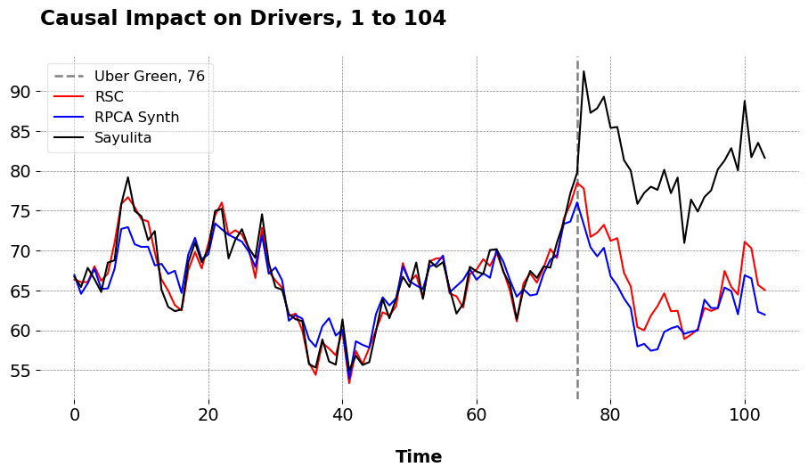
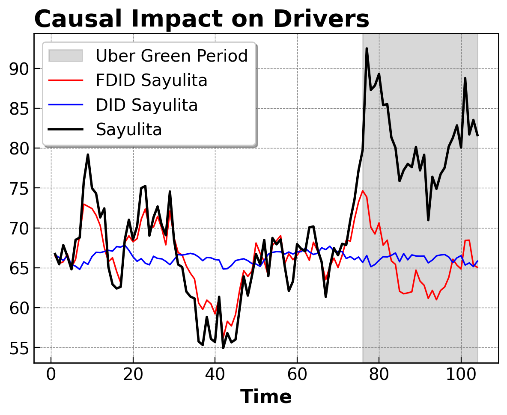

Causal Inference Runs the World: Or, What Are “Actionable Insights”, Anyways?
Econometrics
Causal Inference
Data Science
What Even Are Actionable Insights?
Man, I hate industry jargon. Don’t get me wrong, I’m not against all jargon. I’ve been in academia ten years, and I’ve spent maybe 6 of those being tormented by econometrics. We have our own jargon too, which doesn’t always jive well with industry- I say “causal inference”, marketers will say “incrementality testing”. Maybe it’s because I dislike corporate culture in general, but there’s something about the data science industry lingo that irritates me. “Ambiguity” (I’ll do a post on this one, one day). “Self starter”. “Business acumen”. And the favorite of the day, “actionable insights.” This post is dedicated to showing you how I think about actionable insights, from the perspective of somebody who cares a lot about causal inference.
“Actionable insights”. It’s the one we hear about all the time, even if it isn’t phrased quite like that. Job descriptions and data science pages will go on and on about how we’re meant to deliver them as econometricians, policy analysts, and data scientists, staking our livelihoods to them. But, what are actionable insights anyways? Some pages say ““Actionable insights” describes contextualised data analysis. It’s a piece of information that can actually be put into action — supported by the analysis, context and communication tools required to get the job done.” I agree with this. This leads us to one question then: what is an insight and whatmakes an insight actionable?
A Motivating Example
Recently I saw a post on LinkedIn. It went something like this:
Data Science Intern: “The chart shows that downloading of the App increased by 45%.” Client: “So?”
Junior Data Scientist: “The chart shows that downloading of the App increased by 45%, compared to the same time yesteryear.” Client: “Great! Why?”
Principal Data Scientist: “The chart shows that downloading of the App increased by 45%, compared to the same time yesteryear due to our new pricing strategy. We should roll out Pricing Strategy in more markets since it’ll likely increase revenue by Big Amount.” Client: “That’s great! We’ll get right to it.”
In context, the post was about connecting your results to the next steps of actions businesses/clients should take. And that’s great, we should all be doing that. But I find the hypothetical Principal DS’s answer to be quite wanting. I do not understand why we are meant to see the Principal DS’s remarks as any more wise than the Junior DS. Why? The Principal DS was making a counterfactual claim, implicitly. They were explaining to the client that their Policy W had X impact on Outcome Y, an even went as far as to say that if we kept doing Policy W, we may see gains elsewhere in the future. And this may be true, but how can we tell? For all the talk we have about showing impact in our resumes and results (instead of “I did X”, do “I did X which had X impact on efficiency”), surely we can do better than this. How? Causal inference.
My issue with the post was this: the second you add the phrase “Impact X happened given our new pricing strategy/policy/other intervention”, we’re now very far aflung from Descriptiville, stuck in Counterfactual Land. In this domain, the governance is a bit different than simply getting Tableau/BI to make us a chart: here you see, we need to have some estimate of how sales (or whatever metric we’re meant to care about) would’ve evolved ABSENT whatever the new policy was. Put differently, you can’t just show a bar chart and say “You should do X cuz I made this chart and have verbally attached a reason to a number”. It requires A LOT more work than that.
Actionable Insights, Econometrics Style
Defining the Problem
Before we get to the modeling (rest assured we will!) let’s come up with a simple example. Suppose we work for Uber. Uber introduced Uber Green in September of 2020, as an initiative that is meant to (among other things) incentivize drivers to use electric cars/low emissions vehicles. For the purposes of this post, we’ll be evaluating whether this policy in fact affected the number of drivers who use electric. Given this situation, we must roll out this intervention someplace first in order to see how it may work in other markets (say, Sayulita, Mexico), and we must generate a counterfactual. Or, the number of driver’s who would’ve used electric cars, had we never rolled out Uber Green in this market at this time. In order to accomplish this task, I will use synthetic control based methodologies to estimate the impact. Of course, the goal here is to compute the average treatment effect on the treated, or the average of the differences between our treated unit and the out-of-sample predictions (post intervention period).
Solving the Problem
Let \(\mathcal{N}\) denote the set of cities indexed by \(j\), where \(N \coloneqq |\mathcal{N}|\) represents the total number of markets. Sayulita, the treated city, is indexed by \(j = 1\), while the set of control cities is denoted by \(\mathcal{N}_0 \coloneqq \mathcal{N} \setminus \{1\}\), with cardinality \(N_0 \coloneqq |\mathcal{N}_0|\). Time periods are indexed by \(t\), with pre-intervention periods \(\mathcal{T}_1 \coloneqq \{1, 2, \dots, T_0\}\) and post-intervention periods \(\mathcal{T}_2 \coloneqq \{T_0+1, \dots, T\}\), where \(T_0\) is the last period before the intervention.
For each market \(j\), let \(\mathbf{y}_j \coloneqq [y_{jt}, \dots, y_{jT}]^\top \in \mathbb{R}^{T}\) represent the vector of new drivers who use electric cars, where \(y_{jt}\) denotes the number of weekly new drivers in market \(j\) at time \(t\). Let \(\mathbf{Y}_0 \coloneqq (\mathbf{y}_j)_{j \in \mathcal{N}_0} \in \mathbb{R}^{T \times N_0}\) be the matrix of control markets that did not do this intervention at this time. To estimate the counterfactual new driver supply in Sayulita, we construct a synthetic control by taking some weighted average of the control markets based on their pre-intervention trends, \(\hat{\mathbf{y}}_1(0) = \mathbf{Y}_0 \mathbf{w}^\top\), where \(\mathbf{w} \in \mathbb{R}^{N_0}\) is a vector of weights assigned to the control cities. These weights are chosen to minimize some loss function. The treatment effect at time \(t\) is then estimated as the difference between the observed and counterfactual outcomes, \(\widehat{\Delta}_t \coloneqq y_{1t} - \hat{y}_{1t}(0)\). Our result of interest is the average of these treatment effects over the post-intervention period:
\[ \widehat{ATT} \coloneqq \mathbb{E}_2[\widehat{\Delta}_t] = \frac{1}{T_2} \sum_{t \in \mathcal{T}_2} \widehat{\Delta}_t. \]
If the introduction of Uber Green in Sayulita leads to an increase in the number of new drivers who use electric vehicles, we expect \(\widehat{\Delta}_t\), we can then comment on how this program may be applied to other areas.1. The observed new drivers who use electric cars in Sayulita follows a factor model:
\[ \mathbf{y}_1 = \mathbf{\Gamma} \mathbf{F} + \boldsymbol{\nu}_1 + \boldsymbol{\delta} \mathbb{1}(t \geq T_0), \]
where \(\mathbf{\Gamma} \in \mathbb{R}^{1 \times k}\) represents the factor loadings, \(\mathbf{F} \in \mathbb{R}^{k \times T}\) is the matrix of latent common factors, and the factors evolve as:
\[ \mathbf{F}_t = \rho \mathbf{F}_{t-1} + \boldsymbol{\eta}_t, \quad \boldsymbol{\eta}_t \sim \mathcal{N}(\mathbf{0}, \mathbf{I}_k), \]
where \(\rho\) is the autocorrelation parameter and \(\boldsymbol{\eta}_t\) is a noise term. The idiosyncratic error term, \(\boldsymbol{\nu}_1\), is assumed to follow a normal distribution with zero mean and variance \(\sigma^2\), i.e., \(\boldsymbol{\nu}_1 \sim \mathcal{N}(\mathbf{0}, \sigma^2 \mathbf{I})\). The treatment effect vector \(\boldsymbol{\delta} \coloneqq [\delta_{T_0+1}, \dots, \delta_T]^\top\) represents the change in driver supply due to the Uber Green intervention, which is assumed to affect Sayulita starting at time \(T_0+1\).Let’s begin by plotting our outcome. The plot depicts the weekly new Uber drivers who have switched to electric vehicles. Sayulita is our target unit in black, the average of the control group is the thin red line, and the thin grey line are our donors that didn’t enact the intervention.
A few things are apparent: for one, the parallel trends assumption doesn’t apply here across the 75 pre-treatment periods. The mean of controls doesn’t mirror the trend of Sayilita, suggesting that the time effects are not common across all units (no, instead, the time effects depend on unit specific factors). So, we must use something a little more sophisticated than the standard Difference-in-Differences method. Furthermore, these donors have pretty noisy outcome series. So, vanilla SCM may not be a good estimator either. Fortunately, we can exploit the low rank structure of our control group and use that to learn the weights which reconstructs the pre-intervention time series for our treated unit. I’ve written more about this here. Basically, we denoise the data via PCA or functional analysis, and cluster over the functional representation of control units or their right singular values, and extract the donor pool from this low-rank representation. We can then use principal component regression or robust principal component regression to learn our unit weights.
When we do this, we obtain these predictions, of course using my mlsynth to fit the pre-intervention period.

| Metric | RSC | RPCASC | |
|---|---|---|---|
| 0 | Pre-Treatment RMSE | 1.263 | 2.438 |
| 1 | ATT | 14.875 | 16.944 |
| 2 | Percent ATT | 22.473 | 26.425 |
<Figure size 700x500 with 0 Axes>We can see that both the Robust PCA Synthetic Control and the Robust Synthetic Control/Principal Component Regression methods fit Sayulita quite well in the pre-intervention period. They also have very similar ATTs, suggesting that Uber Green increased new electric vehicle use amongst its drivers by anywhere from 22.473 to 26.425 percent. The normal ATTs are also pretty close to the what I simulated, an ATT of 15. Next, I’ll simulate the ATT using Forward Difference-in-Differences.
from mlsynth.utils.estutils import Opt
model_DID = FDID(config)
arcoDID = model_DID.fit()
# Extract relevant metrics for FDID (index 0) and DID (index 1)
results = {
"Metric": [
"ATT",
"Pre-Treatment RMSE",
"Percent ATT"
],
"FDID": [
arcoDID[0]["FDID"]["Effects"].get("ATT", None),
arcoDID[0]["FDID"]["Fit"].get("T0 RMSE", None),
arcoDID[0]["FDID"]["Effects"].get("Percent ATT", None)
],
"DID": [
arcoDID[1]["DID"]["Effects"].get("ATT", None),
arcoDID[1]["DID"]["Fit"].get("T0 RMSE", None),
arcoDID[1]["DID"]["Effects"].get("Percent ATT", None)
]
}
# Convert to DataFrame
results_df = pd.DataFrame(results)
# Display the DataFrame
display(results_df)
# MA
# Extract counterfactual estimates from each model
cf_RSC = np.array(arco["RSC"]["Vectors"]["Counterfactual"])
cf_RPCASC = np.array(arco["RPCASC"]["Vectors"]["Counterfactual"])
cf_FDID = np.array(arcoDID[0]["FDID"]["Vectors"]["Counterfactual"])
# Stack them into a matrix (T x 3), where T is the time dimension
cf_matrix = np.column_stack((cf_RSC, cf_RPCASC, cf_FDID))
# Extract pre-period data
num_pre_periods = prepped["pre_periods"]
y_pre = prepped["y"][:num_pre_periods].flatten()
Y_pre = cf_matrix[:num_pre_periods, :] # (num_pre_periods, 3)
# Run the optimizer using SIMPLEX model
beta_value = Opt.SCopt(len(Y_pre[1]), y_pre, num_pre_periods, Y_pre, model="SIMPLEX")
# Compute the final averaged counterfactual
cf_final = np.dot(cf_matrix, beta_value)
print("Optimal Weights:", np.round(beta_value, 4))
print("Final Averaged Counterfactual:", cf_final)
| Metric | FDID | DID | |
|---|---|---|---|
| 0 | ATT | 15.527 | 14.957 |
| 1 | Pre-Treatment RMSE | 2.315 | 5.572 |
| 2 | Percent ATT | 23.691 | 22.624 |
Optimal Weights: [0.9581 0. 0.0419]
Final Averaged Counterfactual: [66.36160888 66.02317071 66.03155604 67.96744773 66.14993647 67.07304812
70.89935031 75.73795426 76.53223706 75.32096272 73.83732824 73.51692663
69.66485333 66.33952552 65.01479811 63.19295167 62.5184745 67.5725164
69.76456475 67.77873993 70.80347624 74.30080094 75.87739888 71.89938108
72.44255736 71.98620146 70.2992516 66.61097127 72.84432448 67.45774215
66.26494653 65.37104392 61.91713196 62.17884781 60.14066819 56.13390779
54.62195483 58.52254316 57.80752067 56.94962986 60.12013062 53.46357927
57.42328998 55.83436755 57.84339025 60.13674731 62.34580302 61.92002387
63.08061357 68.40938287 66.10850234 66.86561242 64.06676822 68.61134409
68.98398082 69.07190506 64.64295477 64.36678341 62.97840031 67.01538021
67.594813 68.83088386 67.9763365 69.63781657 67.46166503 64.92520906
61.20592871 65.85274903 67.10369888 65.93898661 67.78465721 70.12701223
69.03837196 73.8463677 75.74422505 78.33810848 77.61879847 71.64457364
72.12346553 73.11514682 71.08075345 71.4242393 67.13535834 65.50793579
60.44763583 60.05915533 61.82258655 62.9858805 64.639472 62.42396589
62.45083217 58.99327237 59.55575532 60.16757211 62.76959818 62.42553622
62.81023402 67.376431 65.43580455 64.48354445 70.98021391 70.22073855
65.66304767 65.0524972 ]<Figure size 700x500 with 0 Axes>Here we plot the results of the standard Difference-in-Differences design and the Forward DID method. As we can see, parallel pre-intervention trends doesn’t hold at all. The selected parallel trends made by FDID is a lot more sensible in this instance, fitting as well as the synthetic control methods as above.
Delivering Actionable Insights
With these results, we can deliver insights a more now precisely than before. Instead of simply speculating, we can say, for example,
We simulated the effect of Uber Green four times. Our best estimates suggest that the percentage of new drivers who use electric cars increased between 22.473 and 26.4 percent in the weeks following the Uber Green program being introduced (I also here might use the Bayesian prediction intervals from RSC to comment on uncertainty). We would need to roll out the program in now areas, but it seems that the program increases electric car usage compared to the baseline.
See? I’m not simply speculating. I’m simulating the universe where what did happen did not happen, and then I’m tentatively suggesting that we implement the program elsewhere based off this single case study.
Artificial Counterfactuals in Dense Settings: the \(\ell_2\) relaxer
Causal Inference
Econometrics
Data Science for Policy Analysts: A Simple Introduction to Web Scraping
Web Scraping
Python
On the Use of Clustering for Synthetic Controls
Causal Inference
Machine Learning
Why Data Generating Processes Matter for Causal Infernece
Econometric Theory
Econometrics
Causal Inference
Applying Forward DID to Construction and Tourism Policy
Causal Inference
Machine Learning
Econometrics
No matching items
Footnotes
Here is the footnote.↩︎